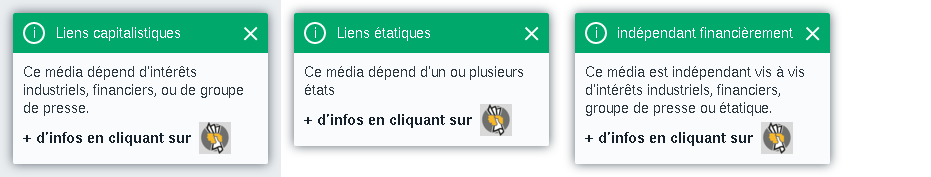
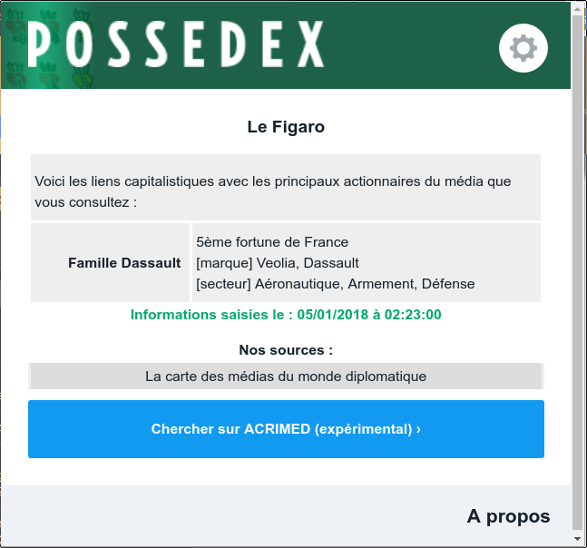

La page d'installation s'ouvrira à chaque mise à jour
Icônes modifiées
Comment ça marche ?
Le Possedex vous permet d’afficher des informations sur les sites que vous visitez en parallèle de votre navigation par deux moyens :
Des informations détaillées qui apparaîtront en haut à droite de votre écran lorsque vous consulterez les sites (pop-up). Elles s’afficheront de la manière suivante :

Quelques exemples d'infobulles
Des informations à votre disposition en un clic à tout moment, via l’icône du Possedex en haut à droite de votre navigateur :

La fenêtre d'information détaillée
Réglages avancés
Par défaut, le Possedex affiche les informations détaillées pour chaque site dont nous avons connaissance. Mais vous pouvez vous-même paramétrer le Possedex selon vos attentes. Pour chaque catégorie, vous pouvez choisir si vous souhaitez avoir des informations détaillées ou non.
Réglez ici vos préférences pour l'affichage de l'infobulle
Vous pourrez retrouver à tout moment les informations disponibles sur une source en cliquant sur l’icône du Possedex en haut à droite de votre navigateur, puis sur l'icône en forme d'engrenage.
Vous consultez un site qui n’est pas dans notre
base de données ?
NE PANIQUEZ PAS !
Il vous suffit de chercher par vous même les informations de ce média.